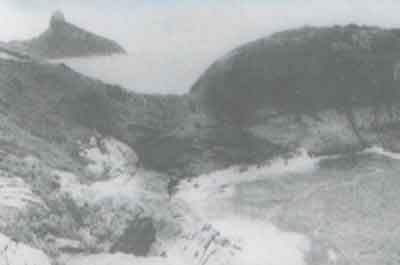

1962
Em 27 de Setembro, reunindo um grupo de cem amigos, os irmãos Menescal fundam o Costa Brava Clube, um refúgio de paz e tranqüilidade na, até então desabitada, região da Joatinga.


Debruçado sobre o mar incomparável do Rio de Janeiro, convivendo em perfeita harmonia com a natureza. Um sedutor convite aos encantos do prazer. Desfrute de todo o charme do Costa Brava Clube e sinta-se privilegiado. Construído a partir da idéia de ser um navio no meio do mar, o clube não é um marco somente na arquitetura, mas também na vida social de nossa Cidade.
Em 27 de Setembro, reunindo um grupo de cem amigos, os irmãos Menescal fundam o Costa Brava Clube, um refúgio de paz e tranqüilidade na, até então desabitada, região da Joatinga.
Durante o verão piscina salgada é inaugurada, um ícone do clube. Reduto de uma extraordinária geração de músicos e artistas, esta jóia esculpida nas pedras da Joatinga, torna-se também uma atração turística. Bossa Nova, a galera do Arpoador e os primeiros biquinis da época dão o charme, iluminando ainda mais este cantinho à contemplação da boa vida.
Inaugura-se mais uma linha no horizonte da cidade. Uma ousada ponte, com 96 metros de comprimento, alcança a Ponta do Marisco, nome oficial da Península onde está localizada a sede do clube.
No “Reveillon do Bucanero”, é inaugurada a boite, que passa a ser ponto obrigatório da noite dos cariocas.
Com a construção das quadras poliesportivas, o Costa Brava torna-se também um clube esportivo. Na preparação para a Copa de 70, o saudoso técnico João Saldanha chegou a levar a seleção de Pelé e Cia. para treinar naquelas quadras. Neste ano é também finalizada a obra da sauna da piscina salgada.
Esta década começa a todo vapor no clube: abre-se o Salão Panorâmico e a piscina de água doce do terraço. Decorada por uma escultura do artista plástico uruguaio, Ion Murezano, este oásis de água doce cercado de mar por todos os lados é um convite à beleza do Rio. Ao longo desta década ainda foram inauguradas uma nova área de esportes e as termas. Um campo de futebol society, uma quadra de vôlei e duas de tênis são algumas das atrações que compõem esta área. Lançando um novo conceito de sauna, as termas do Costa Brava são um clube dentro do Clube. Equipada com sauna seca, à vapor, piscina térmica, hidromassagem, ducha escocesa, sala de repouso, sala de ginástica, cabeleireiro, esteticistas, bar e um deck com vista para o mar, tornando-se o ponto ideal para o relaxamento de seus frequentadores.
É criado o playground, um espaço voltado para a criançada. Equipado com piscina, pista de patins, amarelinha, labirinto e outras coisinhas mais, o parquinho é também um motivo de tranqüilidade para os pais.
Fica pronto o Salão Nobre, abrigando sempre os principais eventos sociais do clube. Cinco anos depois.
Em comemoração ao seu Jubileu de Prata, é realizado um evento com a apresentação de músicos como Roberto Menescal, Nara Leão e Carlinhos Lira. Uma inesquecível festa, à altura do Costa Brava. Neste ano também é inaugurado o auditório com vídeo e telão e o salão de sinuca.
É reformada a sauna da piscina salgada e todo o entorno da piscina. No campo de futebol é colocada grama sintética, criando-se, ainda um confortável complexo para a prática de tênis.
Atualmente, além da manutenção de tudo que foi construído, estamos restaurando a boate para sua reinauguração, bem como estamos fazendo obras de melhorias no pesqueiro e nas termas, substituindo toda iluminação do clube por led. Assim ano a ano continuamos a ser o mais charmoso clube do Rio de Janeiro.